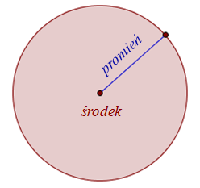
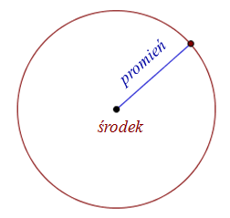
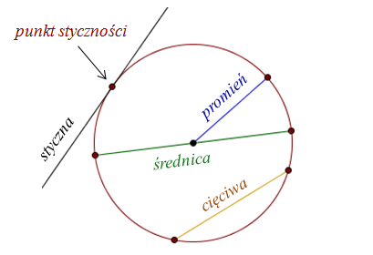
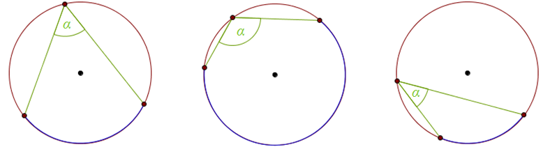
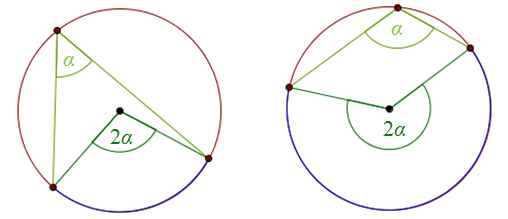
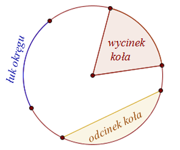
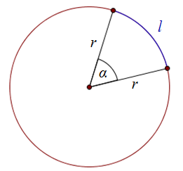
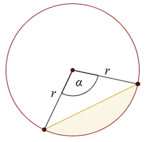

Okrąg i koło
Koło - to zbiór wszystkich punktów na płaszczyźnie, których odległość od
ustalonego punktu (zwanego środkiem koła), jest mniejsza lub równa zadanej odległości (zwanej
promieniem koła).

Koło
Okrąg - to zbiór wszystkich punktów na płaszczyźnie, których odległość od
ustalonego punktu (zwanego środkiem okręgu), jest równa zadanej odległości (zwanej promieniem
okręgu).
Mówiąc prościej - okrąg to brzeg koła.

Mówiąc prościej - okrąg to brzeg koła.
Okrąg
Z okręgiem związane są następujące pojęcia:

- cięciwa - to odcinek łączący dwa punkty leżące na okręgu,
- średnica - to cięciwa przechodząca przez środek okręgu,
- styczna - to prosta mająca z okręgiem dokładnie jeden punkt wspólny.
Promień, cięciwa, średnica, styczna oraz punkt styczności
Wszystkie punkty zaznaczone na bordowo na powyższym rysunku, to są punkty należące
do okręgu.
Uwaga! Środek okręgu nie należy do okręgu! Okrąg, to zbiór tylko tych punktów, które są położone na brzegu koła.
Uwaga! Środek okręgu nie należy do okręgu! Okrąg, to zbiór tylko tych punktów, które są położone na brzegu koła.
Pojęcia cięciwy, średnicy oraz stycznej dotyczą również koła, ponieważ okrąg jest
brzegiem koła.
Środek koła oczywiście należy do koła.
Środek koła oczywiście należy do koła.
Obwód koła (czyli długość okręgu) możemy obliczyć ze wzoru: \[Ob=2\pi r\]
gdzie \(r\) - to promień koła.
Pole koła możemy obliczyć ze wzoru: \[P=\pi r^2\] gdzie \(r\) - to
promień koła.
Oblicz obwód i pole koła, którego średnica jest równa \(10\).
Średnica koła składa się z dwóch promieni. Możemy zatem obliczyć promień koła: \[r=10:2=5\]
Teraz liczymy obwód i pole ze wzorów: \[Ob = 2\pi r = 2\pi \cdot 5=10\pi \] \[P = \pi r^2=\pi
\cdot 5^2=25\pi \]
W okręgu możemy wyróżnić dwa bardzo ważne kąty:
- kąt środkowy - to kąt, którego wierzchołek leży w środku okręgu, a ramionami są promienie,
- kąt wpisany - to kąt, którego wierzchołek leży na okręgu, a ramionami są cięciwy.
Przykłady kątów środkowych

Przykłady kątów wpisanych
Kolorem niebieskim zaznaczono łuki, na których zostały oparte powyższe kąty
środkowe i wpisane.
Jeżeli kąty środkowy i wpisany są oparte na tym
samym łuku, to miara kąta środkowego jest dwa razy większa.

Przykłady kątów środkowych i wpisanych opartych na tym samym łuku
Więcej materiałów o kątach środkowych i wpisanych znajdziesz na tej stronie.
Kolejne pojęcia związane z kołem i okręgiem, to: łuk okręgu, wycinek
koła oraz odcinek koła. 
Łuk okręgu, wycinek koła i odcinek koła
Długość łuku okręgu wyznaczonego przez kąt środkowy \(\alpha \) możemy
obliczyć ze wzoru: \[l = \frac{\alpha }{360^\circ }\cdot 2\pi r\] gdzie \(r\) - to długość promienia
okręgu 
Łuk okręgu wyznaczony przez kąt \(\alpha \)
Pole wycinka koła wyznaczonego przez kąt środkowy \(\alpha \) możemy
obliczyć ze wzoru: \[P = \frac{\alpha }{360^\circ }\cdot \pi r^2\] gdzie \(r\) - to długość
promienia okręgu 
Wycinek koła wyznaczony przez kąt \(\alpha \)
Pole odcinka koła wyznaczonego przez kąt środkowy \(\alpha \) możemy
obliczyć ze wzoru: \[P = \frac{\alpha }{360^\circ }\cdot \pi r^2 - \frac{r^2\sin \alpha }{2}\] gdzie
\(r\) - to długość promienia okręgu 
Odcinek koła wyznaczony przez kąt \(\alpha \)